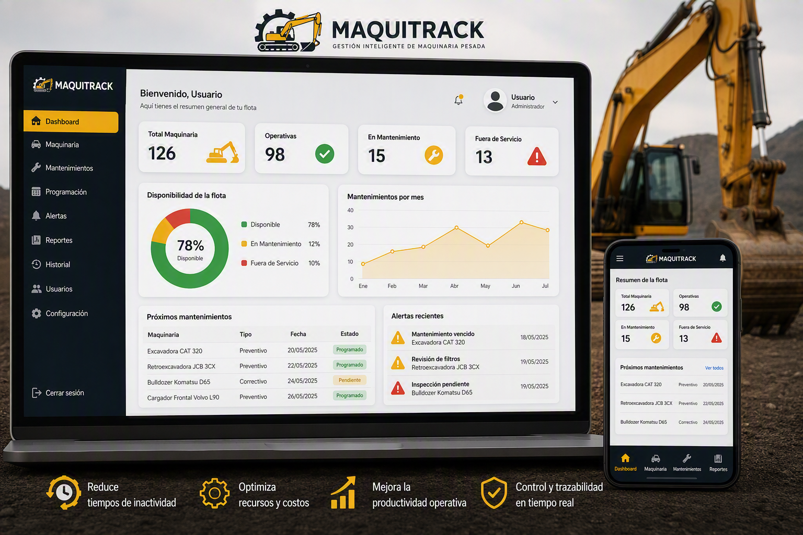

Gestión Inteligente Para Maquinaria Pesada
Controla mantenimientos, costos y disponibilidad de tu flota desde una única plataforma.
¿Qué es Maquitrack?
Maquitrack es una plataforma diseñada para gestionar, planificar y controlar el mantenimiento de maquinaria pesada, permitiendo optimizar recursos, reducir tiempos de inactividad y mejorar la productividad operativa.

Funcionalidades Principales
🚜 Inventario de Maquinaria
Registro completo de equipos y activos.
🛠️ Mantenimiento Preventivo
Programación y control de actividades preventivas.
⚙️ Mantenimiento Correctivo
Seguimiento a fallas e incidencias.
🔔 Alertas Automáticas
Notificaciones de mantenimientos próximos o vencidos.
📊 Reportes e Indicadores
Análisis de desempeño y disponibilidad.
📋 Historial de Intervenciones
Trazabilidad completa de cada equipo.